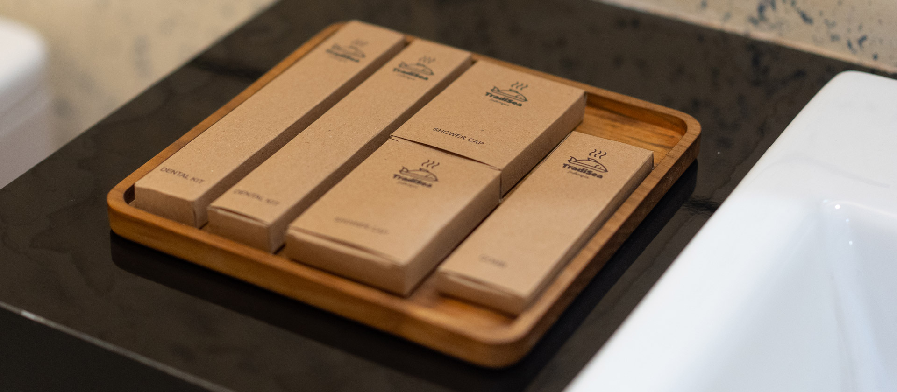

Penginapan
Menginap di Antara
Jejak Waktu
Kamar-kamar di TradiSea bukan sekadar tempat tidur, ini adalah ruang yang merawat ingatan. Bangunan lama yang dipugar dengan cermat mempertahankan karakternya yang historis, dipadukan dengan sentuhan desain modern yang nyaman.
Kayu lawasan menjadi elemen utama yang menceritakan masa lalu. Batik Situbondo menghiasi setiap sudut sebagai penghormatan pada budaya lokal. Setiap malam menginap adalah bagian dari pelestarian, bukan sekadar istirahat.
Bangunan bersejarah yang dipugar dengan karakter
Elemen kayu lawasan yang autentik
Dekorasi batik Situbondo terkurasi
Pengalaman menginap yang personal & berkarakter


